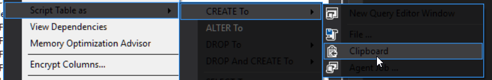

SSMS Dark Mode in SQL Server Management Studio
In SQL Server Management Studio you can enable the hidden Dark Mode, by altering one line in one file.
Caveats -- it's not a great dark mode implementation, yet. A few things are not themed, and some menus have black text on gray background.

Despite this I still prefer it, very much. Better for the eyes.
Before applying the change you will only have two color themes (Blue and Light) available under:
Tools -> Options -> General -> Color themes
To fix this:
Find the folder SSMS is running from, e.g.
| Version | Example Location |
|---|---|
| SSMS 2016 | C:\Program Files (x86)\Microsoft SQL Server\130\Tools\Binn\ManagementStudio |
| SSMS 17 | C:\Program Files (x86)\Microsoft SQL Server\140\Tools\Binn\ManagementStudio |
(Basically got to C:\Program Files (x86)\Microsoft SQL Server\ and find the biggest number, go into it, then look in Tools\Binn\ManagementStudio ... or right click your SSMS to see where it's launched)
As administrator Edit the file ssms.pkgundef
- Look for the line
// Remove Dark Theme - The very next line needs to be commented out! Put
//at the start of the line, to comment it out.
Restart SSMS.
Go to:
Tools -> Options -> General -> Color themes
Available theme now includes Blue, DARK and Light.
Source(s)
How to enable dark theme in SQL Server Management Studio -- this is the one i used
Setting up the dark theme in SQL Server Management Studio -- this is one i didn't use but it may be useful if/when upgrades break it